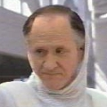
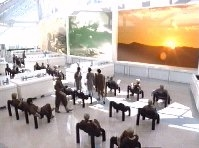
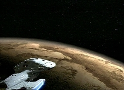

|


|

Referências:
| Episódio | Ano |
| Caretaker,
Parts I & II (Voyager) |
2371 |
| Elogium (Voyager) |
2371 |
| Cold
Fire (Voyager) |
2372 |
| Warlord (Voyager) |
2373 |
| Before
and After (Voyager) |
2373 |
| Scorpion,
Part I (Voyager) |
2373 |
| The
Gift (Voyager) |
2374 |
| Fury (Voyager) |
2376 |
Marcos históricos:
|
2371 2372 2374 |
|
 OcampasOcampas
História Talvez a coisa mais curiosa sobre os Ocampas é o fato de que não vivem mais do que nove anos. Já possuíram habilidades mentais, mas atualmente só resta vestígios disso. Porém, comunicação telepática ainda é possível.  A água era abundante nesta cidade. Os túneis pelos quais os Ocampas desceram ao sub-solo foram celados com campos de força. Tempos mais tarde a facção dos Kazon-Ogla estabeleceu-se na superfície a fim de minerar a cormalina, uma riqueza da região. Eles realizaram tentativas frustadas de penetrar na cidade subterrânea para roubar a água.  Os Ocampas foram protegidos durante 500 gerações, mas após a morte do Caretaker ninguém sabe o que o futuro guarda para a espécie. As reservas energéticas são suficientes para apenas 5 anos. Quando exauridas, forçarão a volta da raça à superfície, onde terá que encontrar meios de se adaptar. Fisiologia Os Ocampas se assemelham muito aos humanos, mas apenas fisicamente . Sua expectativa de vida é de cerca de nove anos, a marca registrada da espécie. Sua procriação é um processo repleto de rituais. Em primeiro lugar, as fêmeas precisam entrar na fase do Elogium, semelhante à puberdade humana, ou seja, maturidade. A diferença é que o Elogium dura um tempo finito e ocorre apenas uma vez na vida da mulher. Normalmente, o Elogium
ocorre na idade de 4 ou 5 anos. Uma bolsa mitral cresce nas costas
da Ocampa; nesse local a criança se desenvolverá. As
palmas das mãos são então cobertas pelo "Ipasaphor",
uma secreção amarelada e o casal tem 40 ou 50 horas para iniciar
o acasalamento. Antes disso, entretanto, o ritual do rolississim
deve ser feito; pai ou mãe da moça deve massagear seus pés até
a lingua ser engolida. O procedimento deve durar em torno de 6
dias para a criança ser concebida. Os Ocampas vivem um impasse. A camada conservadora da sociedade não aceita as idéias dos mais jovens, que insistem na capacidade mental da espécie há muito adormecida. Os mais velhos consideram tais idéias fantasiosas e uma afronta às vontades do Guardião. Aliás, todos os aspectos da cultura estão condicionados à interpretação dos líderes às vontades da entidade que os nutre. Isso tornou os Ocampas
um povo dependente, vulnerável e incapaz de combater as
adversidades. São conformistas, apáticos e passivos dentro de
seu próprio mundo.
|